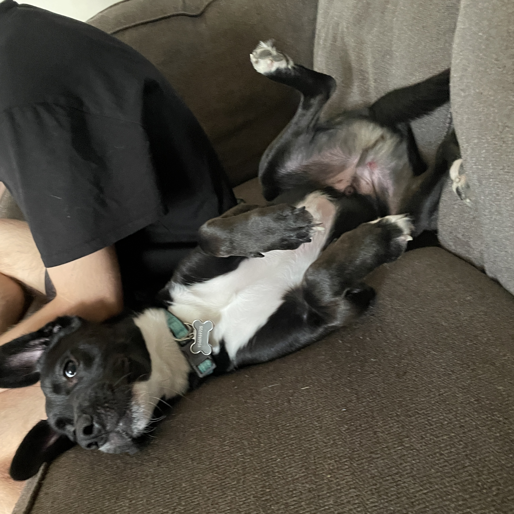
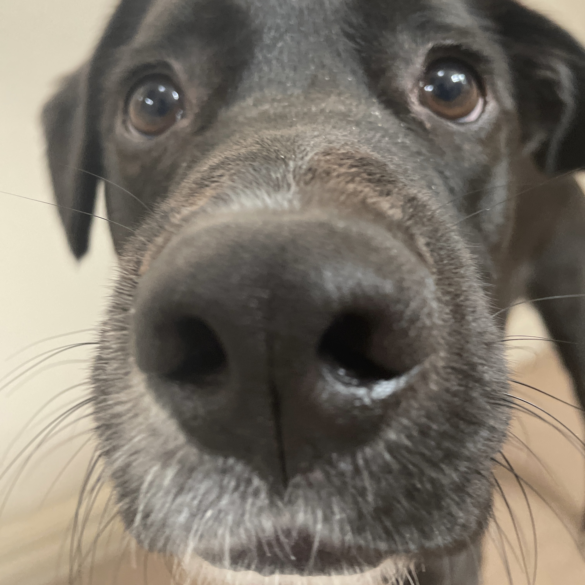

Source: Zachary Carnell
Source: Zachary Carnell
Source: Zachary Carnell
Kunai the Puppo
Through the creation of this page, I learned how to use JavaScript event handlers, such as onclick, onmouseenter, onmouseleave, and onmousedown, to create a devastatingly cute demonstration of Kunai the Puppo’s cuteness.
There are not enough words in the world to truly capture the full extent of Kunai the Puppo’s cuteness. He’s the most beautiful puppo there ever was. He’s the fairest of them all. The cutest cutey to ever cute.
Once upon a time, Kunai the Puppo was really cute. And then he kept being cute. He’s really a really beautiful puppy and also cute and beautiful… and cute. He’s also the sweetest puppy ever, not to mention how cute he is.
Scientists have spent years trying to understand how a single organism can radiate so much cuteness, to no avail. In fact, Albert Einstein once said, “Yeah, the theory of relativity is pretty rad, but Kunai the Puppo defies the laws of cuteness.”
Some also theorize that his cuteness might be the key to curing cancer. In a double-blind, perspective, longitudinal study, researchers had participants spend five minutes staring into Kunai the Puppo’s ebony eyes. Astonishingly, all 16 billion participants were cured of cancer. The current world population is around 8 billion, so these results were quite promising.
More research is needed to truly verify their findings, as skeptics speculate that Kunai the Puppo used his hypnotic cuteness to manipulate researchers into exaggerating their findings.
Now, there’s something important I really need to emphasize: Sure, Kunai the Puppo is really cute, of course; however, he’s also really cute. That, on top of being really cute, has always left me astounded. Furthermore, he is really cute.
People used to think beauty was subjective. But then Kunai the Puppo was born, revolutionizing the notion of cuteness.
As his cuteness continues to capture the hearts of anyone with a heart around the world, Kanye West has joined forces with his fellow dogs in protest.
“I see truth, man,” West said. “We are all dogs ourselves in that we all descended from the same place dogs descended from, right? So I won’t stand by no longer as Kunai the Puppo gets all the credit for all the beauty this world has for us.”
Such unrest has gotten the attention of the U.S. federal government. President Biden is now mandating that no one looks into the eyes of Kunai the Puppo until scientists have a more firm understanding of their power.
Anyway, he’s really cute. And if I can leave you with anything today, it’s that he’s really cute.